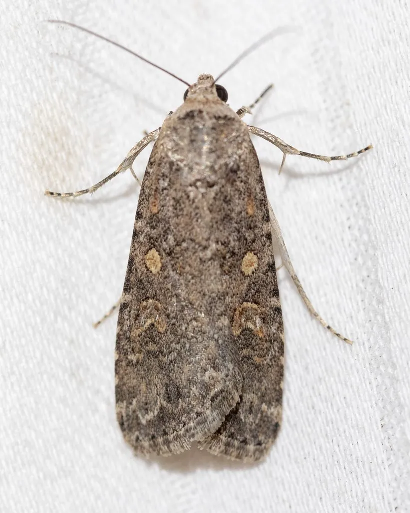

昆虫 · 动物界
甜菜夜蛾 Spodoptera exigua

世界性农业害虫，幼虫体色多变、食性广，暴食蔬菜和甜菜叶片，抗药性强，是防治难度较大的害虫。
- 分类
- 门节肢动物门纲昆虫纲目鳞翅目科夜蛾科属灰翅夜蛾属
- 栖息环境
- 农田、菜地、果园与荒地，寄主植物种类多
- 地理分布
- 全球温暖地区，中国各地均有分布
- 保护级别
- 暂无评估；重要农业害虫
物种志
甜菜夜蛾成虫翅展约 2.5–3 cm，前翅灰褐色，有环状和肾状斑纹，后翅白色带褐色边缘。幼虫体色变化很大，从绿色、黄色到褐色都有，体节上常有白色纵线，老熟幼虫体长约 2–3 cm，身体较光滑。
它食性广，可取食甜菜、蔬菜、棉花、玉米等数十种植物，幼虫白天躲在叶背和土缝中，夜间取食叶片，低龄时群集啃食，高龄后分散暴食。甜菜夜蛾是世界性分布的农业害虫，在温暖地区一年发生多代，成虫迁飞能力强，且对多种杀虫剂产生抗药性，是防治难度较大的害虫之一。防治需要结合监测预警、轮作、生物农药和科学用药，避免长期单一使用化学农药。
形态与习性
- 食性幼虫取食甜菜、蔬菜、棉花、玉米等数十种植物
- 翅展成虫约 2.5–3 cm
- 识别幼虫体色多变，体节上有白色纵线
- 习性幼虫夜间取食，低龄群集、高龄分散暴食
- 防治监测预警、轮作、生物农药和科学用药
趣味知识
- 甜菜夜蛾幼虫体色变化很大，绿色、黄色和褐色都常见。
- 它对多种杀虫剂产生了抗药性，防治难度较大。
- 低龄幼虫常群集啃食，高龄后分散暴食，危害更重。